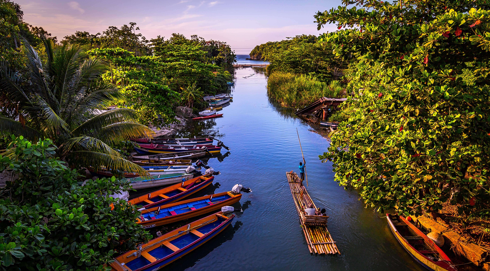

Découverte
La Jamaïque (en anglais : Jamaica) est une île de la mer des Caraïbes. Elle constitue un pays indépendant, faisant partie des Antilles, situé au sud de Cuba et à l'Ouest de l'île Hispaniola, territoire d'Haïti et de la République dominicaine.
